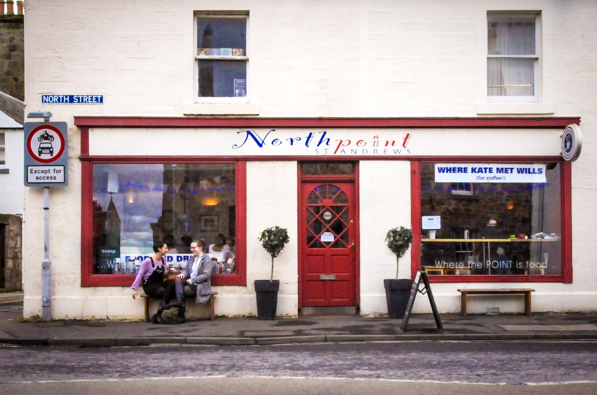

Toggle nagivation
Home
About
Menu

Hours
Monday-Sunday
8:30 - 17:00
Saturday
10:00 - 17:00
Sunday
Closed
Contact Us
Telephone: 01334 473997
Address:
24 North Street, St Andrews, Fife KY16 9AQ
Remember to like us on facebook!